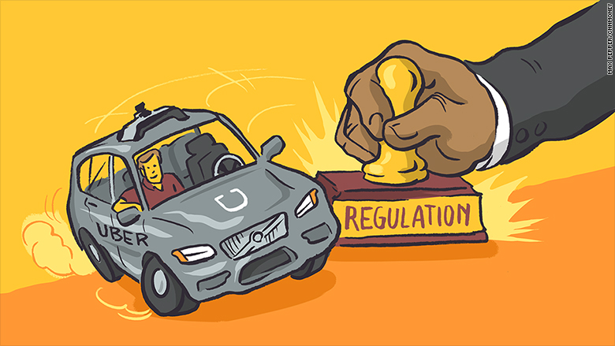

Regulation
Current Legislation
Regulations on autonomous cars, in general, vary wildly from state to state. With no baseline federal law to make them legal, many states ban them altogether, but a growing number are beginning to legalize them.
Laws surrounding the construction and safety requirements for cars in the US are currently geared towards traditionally operated vehicles, and many of them are outdated to the point that they are preventing the advancement of self-driven ones. For example, self-driving cars can’t use their emergency flashers without driver input because of federal motor vehicle safety regulations that were last updated in 1999.
Pressure on legislators to regulate self-driving cars will continue to grow as they become more and more common. In some states, like California, Nevada, and Michigan, legislation legalizing self-driving cars has been passed, and there is pending legislation in Illinois, Massachusetts, New Jersey, Pennsylvania, Rhode Island, and New York to do the same. Since legalizing self-driving cars has the potential to make a state more attractive to both potential inhabitants and companies like Google and Tesla, early adoption would seem to make good economic sense for many states. On the other hand, some places such as New York and Minnesota also have pending legislation that would ban self-driving cars outright. Fueled by fears around the potential loss of jobs to automation and possible crashes due to imperfect technology like the fatal accident that occurred in Arizona earlier this year in March, these bills are mostly reactionary but still have the potential to stall development in some areas for a long time if passed. 22www.autoinsurance.org/which-states-allow-automated-vehicles-to-drive-on-the-road/
Future Legislation
On a national level, there are two bills currently in Congress that are trying to update some of the old safety standards and introduce regulations specific to autonomous cars: The SELF DRIVE Act and the AV START Act.
The SELF DRIVE Act
The SELF DRIVE Act, which passed by the House of Representatives unanimously in September of 2017, but has since stalled in the Senate, is Congress's first substantial attempt to begin regulating autonomous vehicles. One of the most controversial parts of the bill is its establishment that regulation on self-driven cars will come from the federal, not state, government. This makes sense from an industrial viewpoint since it’s much easier to meet one set of standards rather than try to decipher and comply with a separate set of rules in every state, but many in the Senate see this as a possible federal overreach into states rights. Instead of proposing a specific set of regulations, the SELF DRIVE Act calls for the Department of Transportation to issue regulations concerning manufacturer safety assessment certifications within two years of the bill's passage. In addition to that, it also calls for updates to the outdated Federal Motor Vehicle Safety Standards, encouraging the DOT to use performance standards instead of the prescriptive style standards currently in use. The last big section of the bill is about cybersecurity standards. The SELF DRIVE Act prohibits the introduction of autonomous vehicles by manufacturers unless they have a detailed cybersecurity plan, a data privacy plan, and designate someone as a responsible officer, with no exemptions or room for the DOT to be lenient in enforcement. Overall, the SELF DRIVE Act is more concerned with cybersecurity and data privacy than it is with safety standards, although it does call for updates to many outdated regulations in FMVSS. The difference between the safety and cybersecurity requirements introduced in this bill is that while the DOT is given a lot of wiggle room to define safety standards, it is provided far less leeway when it comes to cybersecurity and privacy issues. 20www.congress.gov/bill/115th-congress/house-bill/3388/text
The AV START Act
The AV START Act, drafted by the US Senate Committee on Commerce, Science & Transportation, is a bipartisan bill introduced in October of 2017. The AV START Act is similar to the SELF DRIVE Act in many respects, such as calling for federal instead of state regulation on autonomous vehicles and updates to safety standards, but there are a few important differences between the two. First, the timeline for the development of updated regulations for self-driving cars is only one year – half of what the SELF DRIVE Act provides – and the responsibility is explicitly given to the Volpe Center, the DOT’s technical laboratory. Since the Volpe Center has already done a lot of research into outdated regulations and their potential impact on driverless cars, they will be able to develop the updates more quickly. The requirements put forth in this bill for safety are much stricter with manufacturers than those in the SELF DRIVE Act and include the submission of in-depth safety evaluation reports before an organization can sell autonomous cars. The last difference is that most of the cybersecurity requirements are much less strict, encouraging companies to follow a cybersecurity plan rather than demanding that they do, and there is no mention of data privacy at all. While similar to the SELF DRIVE Act, the AV START Act is more concerned with safety regulations than cybersecurity. 21www.congress.gov/bill/115th-congress/senate-bill/1885/text